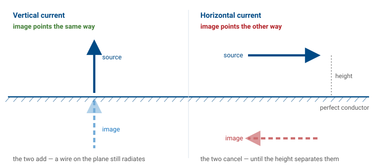
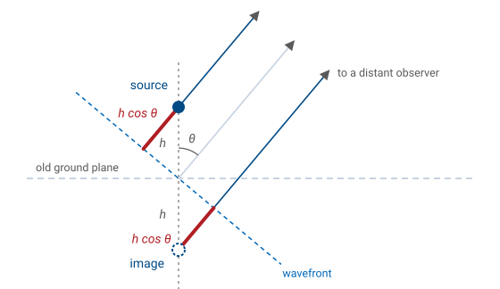
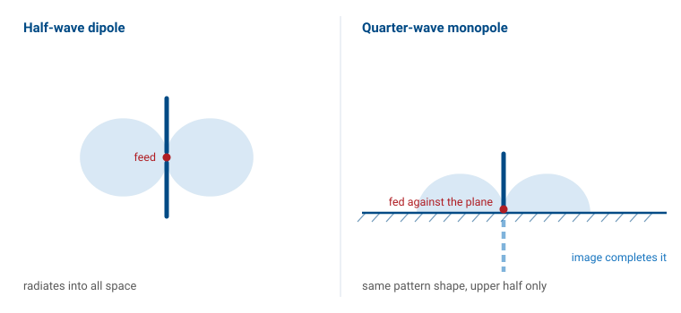
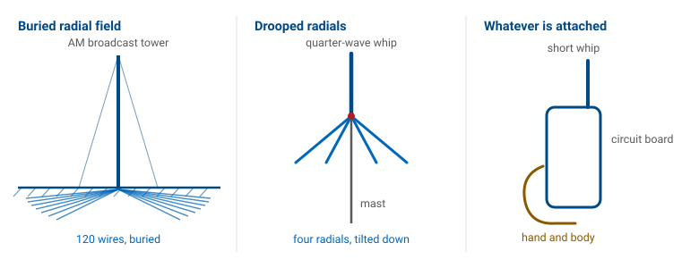
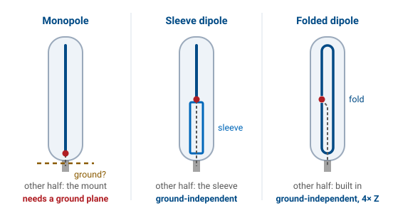
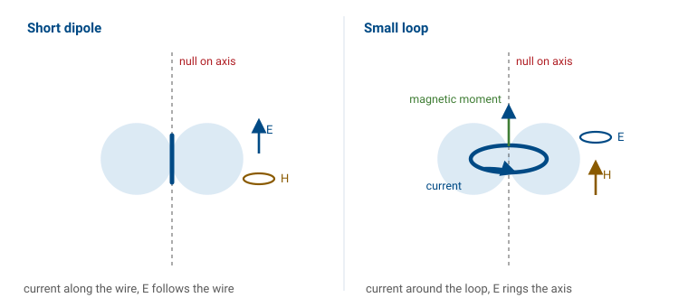
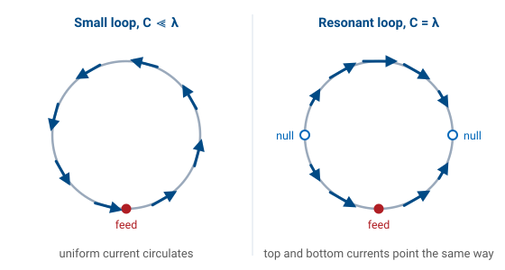

L12 - Loop and Monopole Antennas#
Loop and Monopole Antennas
Image theory turns a dipole into a monopole, and a small loop of current is the dipole’s magnetic dual.
Lesson 12 · Antennas, Phased Arrays, and Radar Systems · Dr. Neil Rogers
Slides
Learning Objectives
- I can apply image theory to build a quarter-wave monopole out of a half-wave dipole, and state its impedance, its directivity, and why it only radiates into a hemisphere.
- I can explain what an imperfect ground does to a monopole, and why radial systems and counterpoises exist.
- I can describe the electrically small loop as a magnetic dipole — its pattern, its very small radiation resistance, and why small loops are receiving and sensing antennas rather than efficient transmitters.
- I can distinguish the electrically small loop from the resonant loop, and connect the limits on small antennas back to the bandwidth-size trade.
Where We Were
Lessons 9 to 11 covered measuring an antenna’s match, pattern, and gain.
Lessons 12 to 14 cover the remaining antenna families.
Today we cover the monopole and the small loop.
Lesson 7 introduced two reference antennas: the isotropic radiator that gain is measured against, and the half-wave dipole at \(73 + j42.5\ \Omega\) and 2.15 dBi. Lesson 8 modeled a dipole in a simulator, and Lessons 9 to 11 measured antennas on an analyzer and on a range, so every impedance and gain figure from here on is one we know how to test.
Today we add the other two wire antennas that are common in the field. The monopole stands on a ground plane; it is half a dipole and behaves like one. The small loop is the dipole’s magnetic dual and behaves very differently. Monopoles are mounted on vehicles, towers, and handheld radios, and small loops are the standard antenna for direction finding.
Image Theory and the Sign Rule
A vertical current images in phase — the image points the same way.
A horizontal current images out of phase — the image points the other way.

An antenna above a large, perfectly conducting plane is a boundary-value problem: the tangential electric field must vanish everywhere on the conductor. Solving that directly is difficult, and image theory avoids it. Delete the conductor, add a mirror-image source below where the plane used to be, and choose the image’s sign so that the tangential field cancels on the old boundary. The two sources together satisfy the same boundary condition, so above the plane they produce the identical field. Below the plane the pair produces a field that describes nothing physical, and there is no field there in any case because the conductor shorts it out.
Image theory needs the plane to be a perfect conductor and, strictly, infinite. Neither holds in practice, and the frames on real ground below cover the consequences.
Vertical and Horizontal Wires Near Ground
A vertical wire and its image add, however close to the plane you push it.
A horizontal wire and its image subtract, and cancel exactly at zero height.
A vertical antenna works even when it sits directly on the ground, and a horizontal wire laid on the ground radiates almost nothing. That is why broadcast towers are vertical and why a field-expedient dipole has to be raised well above the ground.
Element and Image as a Two-Element Array

The source leads the wavefront by \(h\cos\theta\); the image lags by the same amount.
The image’s sign picks \(+\) or \(-\). At the horizon \(\cos\theta = 0\), so only the vertical case radiates.
With the image in place, this is the two-element array problem from Lesson 6. We put the old ground point at the origin, the source at \(z = +h\), and the image at \(z = -h\), and measure \(\theta\) from the vertical; only \(0 \le \theta \le 90^\circ\) describes a real field. A distant observer sees parallel rays. Measured from a wavefront through the origin, the ray from the source is shorter by \(h\cos\theta\) and the ray from the image is longer by the same amount, so their phases are \(+kh\cos\theta\) and \(-kh\cos\theta\). The image has the same sign as the source for a vertical current and the opposite sign for a horizontal one, and Euler’s formula turns each sum into a single trigonometric function:
The same result comes directly from the radiation vector of Lesson 6,
Its phase factor is the path-length picture above: \(\hat{\mathbf r}\cdot\mathbf{r}'\) is how much closer to the observer a piece of current sits than the origin does, and for a point on the axis at \(z' = \pm h\) it equals \(\pm h\cos\theta\). For an element that is symmetric about its own center, as a dipole is, the total current is the element’s current centered at \(z = +h\) plus the same current centered at \(z = -h\), multiplied by the image sign \(s\) (\(+1\) for a vertical current, \(-1\) for a horizontal one). Shifting a current by \(\pm h\) along the axis multiplies its integral by \(e^{\pm jkh\cos\theta}\) and changes nothing else, so
The radiation intensity goes as \(\vert N_\theta\vert^2 + \vert N_\phi\vert^2\), and the scalar \(AF\) multiplies both components, so the pattern is the element factor times the array factor,
This is the Lesson 6 result for two elements \(2h\) apart, with a phase difference of \(2kh\cos\theta\) between the two paths. Directivity follows from
with \(P_\text{rad}\) integrated over the upper hemisphere only. The array factor changes both \(U_\text{max}\) and \(P_\text{rad}\), which is why a low horizontal wire can gain directivity while the power it radiates, and its \(R_r\), fall. Perfect ground always nulls horizontal polarization along the ground. No amount of height removes that horizon null; height only sets the elevation of the first lobe.
The Quarter-Wave Monopole
Cut a half-wave dipole in half, discard the bottom, and stand the top on a ground plane.
The image restores the missing half, so the pattern shape and the current are unchanged.

Drive the remaining quarter wavelength against the plane at its base and, above the plane, the fields are the fields of the full half-wave dipole. Two things change, and both follow from the geometry rather than from new physics.
Monopole Impedance and Directivity
Half the structure at the same current takes half the voltage.
The same beam fills half the solid angle.
No power is created. The same beam fills half the sphere, so its peak is twice the average.
Dipole Against Monopole
Quantity |
Half-wave dipole |
Quarter-wave monopole |
|---|---|---|
Length |
\(0.5\lambda\) |
\(0.25\lambda\) |
\(Z_{\text{in}}\) |
\(73 + j42.5\ \Omega\) |
\(36.5 + j21.3\ \Omega\) |
Trimmed |
\(0.47\lambda\), \(70\ \Omega\) |
\(0.24\lambda\), \(36\ \Omega\) |
Directivity |
2.15 dBi |
5.15 dBi |
Coverage |
all space |
upper hemisphere |
The elevation half-power beamwidth halves too, from \(78^\circ\) to \(39^\circ\), because only the upper half of the same beam exists. A quarter-wave monopole over a good ground plane behaves as a half-wave dipole whose lower half is supplied by the image.
Worked Example — a 146 MHz Whip
We design a quarter-wave monopole for the middle of the 2 m band and check its match to \(50\ \Omega\).
Length. \(\lambda = c/f = (3\times10^8)/(146\times10^6) = 2.05\ \text{m}\), so \(\lambda/4 = 0.514\ \text{m}\) — a 51 cm whip.
Match as-built. With \(Z_{\text{in}} = 36.5 + j21.3\ \Omega\) against \(50\ \Omega\),
Match after trimming. Shorten the whip by about 4% to \(0.24\lambda = 49\ \text{cm}\) to cancel the reactance. Now \(Z_{\text{in}} \approx 36\ \Omega\) real, and VSWR \(= 50/36 = 1.39\).
Match after tilting the radials. Drooping four quarter-wave radials down about \(45^\circ\) raises the base impedance to roughly \(50\ \Omega\), which gives a VSWR near 1.0 with no matching network. This is why commercial ground-plane antennas have drooping radials, and the Lesson 10 analyzer can confirm the prediction in a few minutes.
Height Above Ground
Drag the height slider to compare the two rules. Start with the vertical element at the bottom of its range: the pattern is the monopole’s, the directivity readout shows 3.28, and the peak sits on the horizon. Then switch to the horizontal wire at the same height and look at the third pill — the directivity is higher, but the radiated power has collapsed by more than 10 dB, because the image is canceling the source. Raise the horizontal wire and watch that power come back as the first lobe forms overhead.
Directivity Versus Gain
A horizontal wire at \(0.05\lambda\) has 9 dBi of directivity pointed straight up but radiates almost nothing, because the cancellation appears in the radiation resistance, not in the pattern.
Directivity describes only the shape of the radiated pattern. This is the first place in the course where directivity and gain separate far enough to matter, and a datasheet that quotes directivity where you expected gain is not necessarily lying, but it is not answering your question either.
The collapse reduces gain through efficiency. The wire’s own loss \(R_{\text{ohmic}}\) does not depend on the image, but \(R_r\) does: a half-wave dipole’s \(73\ \Omega\) falls to about \(6\ \Omega\) at \(0.05\lambda\) and about \(1\ \Omega\) at \(0.01\lambda\). With \(R_{\text{ohmic}} = 1\ \Omega\), \(\eta_{\text{rad}} = R_r/(R_r + R_{\text{ohmic}})\) drops from 99% in free space to 85% and then 50%, and since \(G = \eta_{\text{rad}} D\) the gain falls with it. A tiny \(R_r\) also means a large feed current for any real radiated power, and a match up to 50 Ω that adds loss of its own.
Real Ground
Return current dissipates in the soil.
With only \(36.5\ \Omega\) of \(R_r\), a few ohms of ground loss is significant.
Real earth cannot support a grazing field, so the horizon lobe is lost.
5.15 dBi is an upper bound.
Real ground is a lossy dielectric. The loss appears in series with the feed as a ground resistance \(R_g\), which is why AM broadcast stations bury a radial system — the FCC standard is 120 buried wires, each a quarter wavelength long, fanning out from the tower base. The radials do not radiate. They intercept the return current in copper instead of in dirt. And because the reflection coefficient falls away near the horizon, the elevation angle at which the energy leaves is set by the ground, not by the antenna.
Ground Systems and Counterpoises

A car roof is several wavelengths across at 800 MHz and works as a ground plane.
At 30 MHz the same roof is about \(0.15\lambda\) across and works poorly.
Without a ground plane, a counterpoise provides the return path.
Four drooping radials on a mast, a metal disc under a GPS patch, the ground pour on a circuit board are all counterpoises. On a handheld radio the counterpoise is the case, the board, and your hand, which is why gripping a handheld differently changes both its impedance and its pattern, and why handheld radios are tested against a phantom hand.
When we model a monopole in the Lesson 8 simulator, the model needs an explicit ground: a perfect-conductor plane for the textbook answer, or a real-earth model with a conductivity and a permittivity for the realistic one. Feed the base segment against that plane. A monopole modeled in free space with no ground is a very short dipole, and the simulator will return a number that does not describe the antenna you meant to build.
Same Radome, Three Antennas

A vertical in a plastic tube may be a monopole, a sleeve dipole, or a folded dipole.
Only the monopole takes its other half from the mount.
Read the datasheet, not the housing.
They look alike, they are sold side by side, and the fiberglass hides the one difference that decides how to mount them. A monopole’s other half is whatever it is bolted to. On a metal roof, or with its own radials, it works the way this lesson says. On a fiberglass mast or a wooden post there is no plane, so the return current finds the outside of the coax instead: the feed line becomes the counterpoise, and the pattern and VSWR start depending on how the cable is routed. That is Lesson 4’s common-mode problem, seen from the antenna side. A datasheet that says “ground plane required” is telling you it is a monopole.
A sleeve (coaxial) dipole builds its lower half out of a quarter-wave metal tube around the feed coax, shorted to the shield at the top and open at the bottom. The sleeve is the dipole’s lower arm, and because it is a shorted quarter-wave stub it also presents a high impedance to current on the outside of the line below it, so it chokes the feed line out of the antenna. It is a half-wave dipole near \(73\ \Omega\) and works the same on any mount.
A folded dipole is a half-wave dipole with a second conductor joined to the first at both ends. The pattern is the dipole’s and it needs no ground, but the feed sees about \(4 \times 73 \approx 290\ \Omega\) (Lesson 7), so a commercial one includes a 4:1 balun in its base (Lesson 4). Cut one in half over a plane and you have a folded monopole, about \(146\ \Omega\), which is a monopole again and needs its ground like any other.
The Small Loop Is a Magnetic Dipole
The circumference is well under a wavelength; \(C < 0.1\lambda\) is the usual criterion.
The current is uniform all the way around, in phase.
The result is an oscillating magnetic moment \(m = IA\), the exact dual of the short dipole.
Now change the current’s shape instead of its neighborhood. A small loop has too little electrical length for the current to vary, and putting that uniform current into the radiation integral from Lesson 6 gives the dual of the short dipole. A short dipole is an oscillating electric dipole moment; a small loop is a magnetic one, pointing along the loop axis by the right-hand rule, and the electric and magnetic fields exchange roles.
The magnetic moment \(m = IA\) comes from Biot–Savart, the same law behind the \(1/r^2\) induction term of Lesson 5. For a DC current \(I\) on a circular loop of radius \(a\), the field on the loop axis at distance \(z\) from its center is
Far from the loop, the current and the area appear only as the product \(m = IA\). The loop’s shape does not appear, and the field has the same \(1/z^3\) form as the on-axis field of an electric dipole, \(E_z = p/(2\pi\varepsilon_0 z^3)\), with \(m\) in the role of \(p\). That is why any small loop, circular or square, is characterized by its moment alone.
Let the current oscillate and keep the loop small, and the same moment sets the radiated field. The far fields of the small loop and the short dipole from Lesson 6 are
so a small loop radiates like a short dipole whose current moment \(I_0\ dl\) has magnitude \(k I_0 A\). Putting \(dl = kA\) into the short dipole’s \(R_r = 80\pi^2 (dl/\lambda)^2\) gives
which is the fourth-power law in The Fourth-Power Penalty below. The fourth power comes from the area: \(R_r\) goes as the square of the equivalent length \(kA\), and the area of a loop grows as the square of its circumference.
Short Dipole Against Small Loop
Short dipole |
Small loop |
|
|---|---|---|
Source |
\(I\) along \(\ell\) |
\(I\) around \(A\) |
Far field |
\(E_\theta\), \(H_\phi\) |
\(E_\phi\), \(H_\theta\) |
Pattern |
\(\sin\theta\) |
\(\sin\theta\) |
Directivity |
1.76 dBi |
1.76 dBi |
Null |
along the wire |
along the axis |
\(R_r\) |
\(80\pi^2 (\ell/\lambda)^2\) |
\(20\pi^2 (C/\lambda)^4\) |
Maximum in the Plane, Null Through the Hole

The pattern is the same donut, with the polarization rotated \(90^\circ\).
The maximum is in the plane of the loop, and the null is along its axis.
Direction finding uses that null.
The null placement is the opposite of what most people expect. You rotate the loop until the signal disappears, and the bearing is precise because a null is sharp while a pattern maximum is broad. We saw the same asymmetry in the measured patterns of Lesson 11, where null depth was the hardest number to measure reliably.
The Fourth-Power Penalty
Only \(R_r\) radiates; the wire’s \(R_{\text{ohmic}}\) is in series and dissipates heat.
Halving the loop cuts \(R_r\) by 16 and the wire’s loss by only 2.
At \(C = 0.1\lambda\), 20 mΩ of \(R_r\) against 114 mΩ of loss gives 15% efficiency.
This is why we keep computing radiation resistance. The feed sees \(R_r + R_{\text{ohmic}}\) in series, the same current flows through both, and the input power splits between them in proportion — the same \(\eta_{\text{rad}} = R_r/(R_r + R_{\text{ohmic}})\) that decided the ground systems. A small loop’s \(R_r\) goes as \(C^4\), but its loss only as \(C\) for a given wire, so once the loop is small its efficiency falls roughly as \(C^3\): halving a \(0.1\lambda\) loop lowers the efficiency by another 8.5 dB. At \(C = 0.1\lambda\) the radiation resistance is already smaller than the loss of the copper the loop is made from, which is exactly the problem the next frame works through.
Worked Example — a 30 MHz Loop
A single-turn copper loop, \(C = 0.1\lambda\) at \(f = 30\ \text{MHz}\) (\(\lambda = 10\ \text{m}\)), made of 4 mm diameter wire (\(b = 2\ \text{mm}\)). Loop radius \(a = C/2\pi = 0.159\ \text{m}\).
Radiation resistance. \(R_r = 20\pi^2 (0.1)^4 = 0.0197\ \Omega\) — 20 milliohms.
Loss resistance. Copper surface resistance at 30 MHz is \(R_s = \sqrt{\pi f \mu_0/\sigma} = 1.43\ \text{m}\Omega\) per square, and the loop is \(C/2\pi b = 79.6\) squares around:
Efficiency. \(\eta_{\text{rad}} = 0.0197/(0.0197 + 0.114) = 0.148\), i.e. 14.8%, a loss of 8.3 dB. Gain \(= 1.76 - 8.3 = -6.5\ \text{dBi}\).
What that means at the feed. To deliver 100 W you need \(I = \sqrt{2P/R_{\text{total}}} = 38.7\ \text{A}\) peak in that loop, of which 15 W radiates and 85 W heats the wire. This is why transmitting magnetic loops are built from thick copper tubing with welded joints and a vacuum capacitor.
Low Efficiency, Same SNR
Loss cuts the signal and the external noise by the same factor.
SNR holds until the external noise falls to the receiver’s floor.
At 1 MHz, external noise is 70 dB above \(kT_0\); 40 dB of loss barely changes SNR.
In a transmitter, every watt that heats the wire is lost. A receiver is limited by signal-to-noise ratio instead, and its noise has two sources. The receiver adds its own, set by its noise figure and referenced to the thermal floor \(kT_0B\): the noise power a matched resistor delivers at \(T_0 = 290\ \text{K}\) in a bandwidth \(B\). The antenna delivers external noise along with the signal, at a power \(kT_AB\) set by its antenna temperature \(T_A\), the temperature of whatever the pattern sees, weighted by the pattern. External noise is the same kind of noise as \(kT_0B\) at a different temperature. Below about 30 MHz, lightning noise propagated by the ionosphere and man-made noise from power lines and electronics make \(T_A\) very large: a residential site at 1 MHz measures about 72 dB above \(kT_0B\) (ITU-R P.372), or \(T_A \approx 5\times10^9\ \text{K}\). A microwave antenna aimed at clear sky, by contrast, can see only 10 to 50 K.
Antenna loss attenuates the external noise and the signal by the same factor and adds only a little thermal noise of its own, at the antenna’s physical temperature:
With 40 dB of loss, \(\eta_{\text{rad}} = 10^{-4}\), the 1 MHz antenna still delivers \(T_A' \approx 5\times10^5\ \text{K}\). That is about 32 dB above \(T_0\) and about 23 dB over the \(T_e = T_0(F - 1) \approx 2600\ \text{K}\) of a receiver with a 10 dB noise figure, so the SNR drops by a few hundredths of a dB. That is why a loop that is a poor transmitter can be a good receiving antenna. It stops working at VHF and above, where \(T_A\) is low and the receiver’s own noise sets the floor.
Receive loops still use every available way to raise their output. \(N\) turns raise \(R_r\) as \(N^2\) and the loss only as \(N\); wind them on a ferrite rod and the effective permeability multiplies the moment again. The bar behind the dial of an AM radio is a many-turn ferrite loop; it is very inefficient, and at broadcast frequencies that loss does not reduce the SNR. A shielded loop also rejects local electric-field noise, which makes it the standard tool for locating interference.
The Resonant Loop

At \(C \approx 1\lambda\) the current is a standing wave that reverses halfway around.
The top and bottom currents point the same way, so the maximum moves to the axis.
\(R_{\text{in}}\) is \(100\)–\(130\ \Omega\); directivity is about 3.1 dBi.
A small loop is too short for the current to change along it. At \(C \approx 1\lambda\) the loop is long enough to hold a standing wave, the same one that sits on a dipole. Fed at one point, and measured along the wire from the feed, the current is approximately
It is maximum at the feed, zero a quarter wavelength away on either side, and \(-I_0\) at the point opposite the feed. That sign is measured in the direction around the loop, and on the far side the wire itself runs the opposite way, so the two reversals cancel: the current at the top and the current at the bottom point the same way in space, and the loop no longer circulates.
The loop then behaves like two parallel, in-phase current elements, the feed side and the far side, separated by the diameter \(2a = \lambda/\pi \approx 0.32\lambda\). Along the loop axis an observer is equally far from both, and their fields add in phase. In the plane of the loop, along the line joining them, they are \(2ka = 2\) rad out of phase and partly cancel, and each side also has its own null along its length. That puts the maximum on the axis, where the small loop had its null. A one-wavelength loop is close to two half-wave dipoles bent around and joined at their ends, which is why its input resistance is about 100 to 130 Ω and nearly real at resonance.
This loop transmits efficiently, with a directivity a little under 1 dB above a dipole’s, and it is the element of the quad antenna. Only its size in wavelengths differs from the small loop, and electrical size is the variable that runs through this whole module.
Small Loop Against Resonant Loop
Small loop |
Resonant loop |
|
|---|---|---|
Circumference |
\(< 0.1\lambda\) |
\(\approx 1\lambda\) |
Current |
uniform |
reverses |
Maximum |
in the plane |
along the axis |
\(R_{\text{in}}\) |
milliohms |
\(100\)–\(130\ \Omega\) |
Used for |
receiving, finding |
transmitting |
Small Antennas and the Chu Limit
Shrinking an antenna drives \(R_r\) toward zero, which lowers efficiency.
It also raises the ratio of stored to radiated energy, which narrows bandwidth.
Loss resistance widens a small antenna’s bandwidth only by dissipating power that would otherwise radiate.
The difference between the two columns of the previous table is the size-bandwidth trade from Lesson 3. An antenna that fits inside a sphere of radius \(a\) stores far more energy in its near field than it radiates each cycle, and the Chu limit puts a floor on the resulting quality factor, so the fractional bandwidth — roughly \(1/Q\) — collapses as the cube of the size. The 30 MHz loop above has \(ka = 0.1\), so \(Q \approx 10^3\) and its matched bandwidth is on the order of 0.1%: about 30 kHz at 30 MHz, which is why a magnetic loop must be retuned whenever the operating frequency moves across the band.
Summary
Symbol / idea |
What it says |
Number to remember |
|---|---|---|
Image theory |
vertical images in phase, horizontal reversed |
a horizontal wire on the ground radiates nothing |
\(Z_{\text{in}}^{\text{mono}} = \tfrac{1}{2}Z_{\text{in}}^{\text{dipole}}\) |
half the structure, half the voltage |
\(36.5 + j21.3\ \Omega\) |
\(D_{\text{mono}} = 2D_{\text{dipole}}\) |
same beam into half the solid angle |
3.28, or 5.15 dBi |
Radial system / counterpoise |
a low-loss path for the return current |
120 buried radials; 4 drooped \(\approx 50\ \Omega\) |
Radome look-alikes |
only the monopole takes its other half from the mount |
folded dipole \(\approx 290\ \Omega\), folded monopole \(\approx 146\ \Omega\) |
\(\eta_{\text{rad}} = R_r/(R_r + R_g + R_{\text{ohmic}})\) |
ground and copper loss compete with radiation |
a few ohms matters when \(R_r\) is small |
Small loop |
magnetic dipole, null on the axis |
\(D = 1.5\) (1.76 dBi) |
\(R_r = 20\pi^2 (C/\lambda)^4\) |
fourth power in circumference |
\(0.02\ \Omega\) at \(C = 0.1\lambda\) |
Resonant loop, \(C \approx 1\lambda\) |
current reverses, maximum moves to the axis |
\(100\)–\(130\ \Omega\), \(\approx 3.1\) dBi |
Chu limit, \(Q \gtrsim 1/(ka)^3\) |
small antennas store far more than they radiate |
\(ka = 0.1 \rightarrow\) about 0.1% bandwidth |
Practice
Where This Is Going
The wire antennas are now covered: dipole, monopole, loop, and image theory.
Lesson 13 moves to printed and aperture antennas: patch, slot, and horn.
The radiating object becomes a surface or an opening.
The patch behaves much like two slots over a ground plane, and image theory explains why it works.
The other thread from today runs into Module 3. A monopole is an element plus one image; an array is an element plus many neighbors, and the same element-factor-times-array-factor bookkeeping handles both. Pattern multiplication in Lesson 16 will be familiar, because the height-above-ground widget from today is a two-element array whose second element is the image.